计算机组成5-1:存储器层次结构
CPU与内存之间的“鸿沟”
在前面的章节中，我们投入了大量的精力，设计出了越来越快、越来越智能的处理器。我们学习了流水线、指令级并行、乱序执行，所有这些技术的目的只有一个——让CPU的计算核心能够在一个时钟周期内完成更多的工作。
然而，一个残酷的现实摆在我们面前：一个再快的CPU，如果总是饥肠辘辘地等待数据，那它也只是一堆昂贵的“沙子”。
在之前的讨论中，我们一直生活在一个理想里：我们假设指令和数据可以瞬时从内存中获取。但现实是，自从计算机诞生以来，CPU的速度与主存（DRAM）的速度之间的差距，不仅没有缩小，反而在以惊人的速度持续扩大。我们称之为内存墙（Memory Wall）。
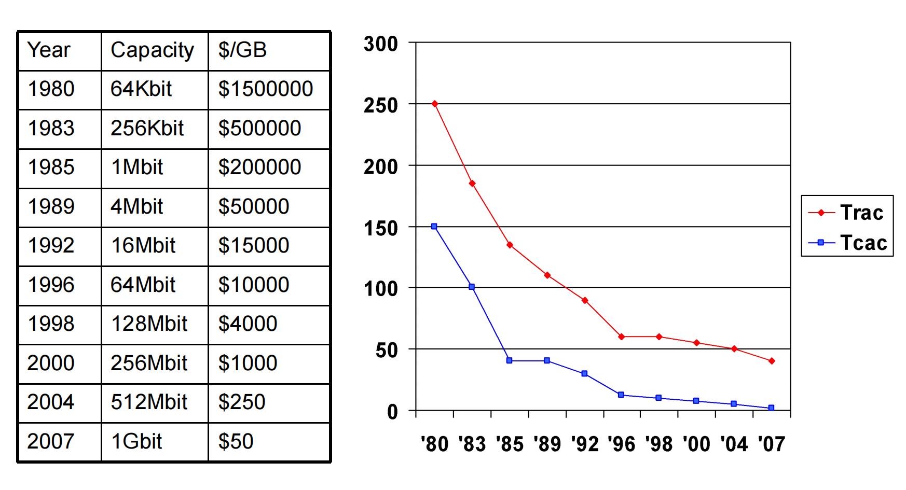
这条不断扩大的鸿沟，是现代计算机体系结构设计师面临的最核心的挑战，甚至比提升CPU本身的计算能力更为严峻。如果CPU每执行几条指令，就要花费数百个时钟周期去等待内存，那么我们之前为流水线所做的一切优化都将付诸东流。
今天，我们的任务就是正面迎击这个挑战。我们将探索计算机体系结构中另一个与流水线同等重要的基石——存储器层次结构（Memory Hierarchy）。我们将学习如何利用巧妙的结构设计和深刻的程序行为洞察，为CPU构建一个既大又快的存储系统幻象。
第一部分：存储技术的现实
要解决问题，首先要了解问题的根源。CPU与内存性能的鸿沟，源于底层存储技术的物理特性。我们主要关注两种核心的易失性存储技术：SRAM和DRAM。
1.1 SRAM (静态随机存取存储器) —— “快”的代表
- 工作原理：每个比特（bit）的数据，由一个包含6个晶体管（6T）的锁存器电路来存储。只要供电，这个锁存器就会稳定地维持在
0或1的状态，无需刷新。 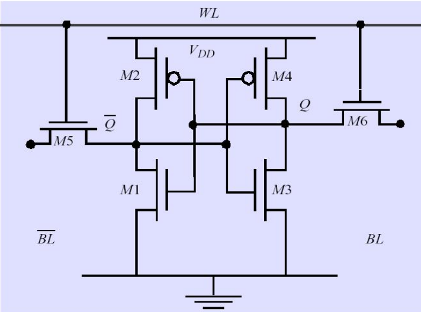 - 特性分析：
- 优点：速度极快。其读写延迟非常低，通常在0.5-2.5纳秒（ns）之间，与CPU的时钟周期在同一个数量级。
- 缺点：密度低，成本高，功耗大。存储1比特就需要6个晶体管，导致单位面积能集成的容量很小，且价格昂贵，静态功耗也较高。
- 应用场景：因为其“快”但“贵”且“小”的特性，SRAM是构建CPU内部高速缓存（Cache）和寄存器堆的理想材料。
1.2 DRAM (动态随机存取存储器) —— “大”的代表
- 工作原理：每个比特的数据，被存储为一个微型电容器上的电荷。一个晶体管作为开关，控制对电容器的访问。 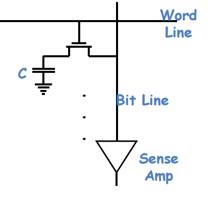
- 特性分析：
- 优点：密度极高，成本低廉。1T1C（一个晶体管+一个电容）的结构，使得DRAM可以在同等芯片面积上实现比SRAM高得多的存储容量，且每比特的成本要低几个数量级。
- 缺点：速度相对较慢，且需要刷新。
- 慢：读取电容上的微弱电荷是一个复杂且相对耗时的过程（50-70ns）。
- 动态特性：电容器会随时间漏电，因此存储的信息必须被周期性地刷新（Refresh），这会带来额外的延迟和功耗。
- 应用场景：DRAM的“大”且“便宜”的特性，使其成为计算机主存储器（Main Memory）的不二之选。
1.3 存储技术的“不可能三角”
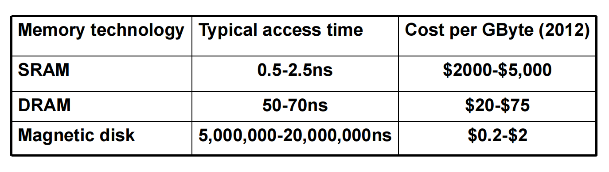
这张表格血淋淋地揭示了存储世界的残酷现实：
- SRAM: 快如闪电，但每GB成本高达数千美元。
- DRAM: 速度尚可，但比SRAM慢一个数量级，每GB成本几十美元。
- 闪存 (Flash Storage): 非易失性（断电不丢数据），速度介于DRAM和磁盘之间，成本也居中。
- 磁盘 (Magnetic Disk): 容量巨大，成本极低（每GB不到一美元），但速度慢得令人发指，访问延迟是DRAM的10万倍以上！
用户的需求是贪婪的：我们想要一个像SRAM一样快，像磁盘一样大，像DRAM一样便宜的存储器。这在物理上是不可能实现的。
既然物理定律无法打破，我们能否通过架构的智慧，创造一个这样的“幻象”？ 答案是肯定的。而我们手中最强大的武器，就是一个深刻的、普适的程序行为规律——局部性原理。
第二部分：局部性原理——黑暗中的灯塔
程序访问内存，并非完全随机、毫无规律可循。绝大多数程序在运行时，都表现出强烈的局部性（Locality）。这是存储器层次结构能够成功的唯一理论基石。
2.1 时间局部性 (Temporal Locality)
- 定义：如果一个数据项在某个时间点被访问了，那么在不久的将来，它有极大的概率会被再次访问。
- 生活化理解：你今天早上穿的鞋，明天早上大概率还会穿。
- 程序中的例子：
- 循环中的指令：循环体内的指令会在每次迭代中被反复执行。
- 循环变量：如
for (int i = 0; ...)中的变量i。 - 栈顶附近的变量：函数调用时，局部变量和参数集中在栈顶，会被频繁访问。
- 高频使用的数据：如一个累加器变量。
2.2 空间局部性 (Spatial Locality)
- 定义：如果一个数据项被访问了，那么与它地址相邻的其他数据项，也很有可能在不久的将来被访问。
- 生活化理解：你看书时，看完了第58页，下一页大概率会看第59页，而不是随机翻到第300页。
- 程序中的例子：
- 顺序执行的指令流：这是最强的空间局部性体现。
- 数组遍历：访问
array[i]之后，通常会接着访问array[i+1]。 - 数据结构：结构体或类的成员变量在内存中通常是连续存放的。
局部性原理的启示： 程序在任何一小段时间内，实际访问的，只是其庞大地址空间中一个非常小的、集中的“工作集（Working Set）”。这个洞察，为我们打破存储技术的“不可能三角”指明了方向。
第三部分：存储器层次结构——构建“又大又快”的幻象
既然程序访问具有局部性，我们就可以构建一个存储器金字塔，来“欺骗”CPU。
3.1 设计哲学与结构
核心思想：将存储系统组织成一个层次化的结构。越靠近CPU的层次，其存储介质越快、越小、越贵；越远离CPU的层次，则越慢、越大、越便宜。
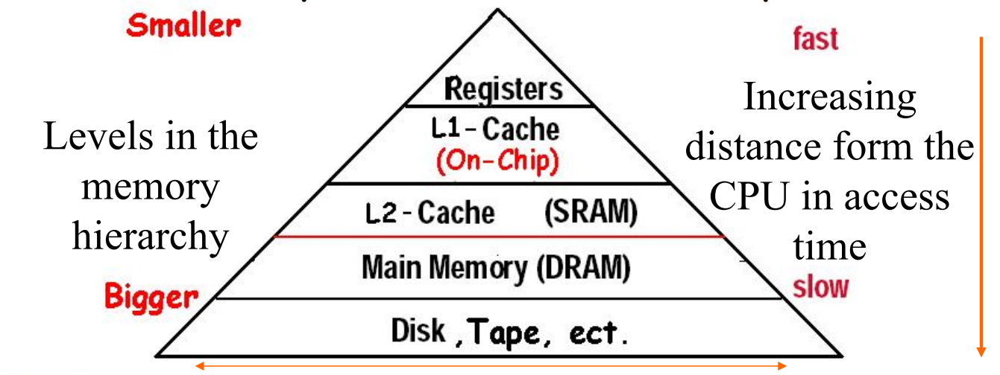
一个典型的存储器层次结构：
- L0: CPU寄存器 (SRAM)
- L1 Cache (一级缓存): 通常在CPU核心内部，使用最快的SRAM。容量极小（几十KB）。
- L2 Cache (二级缓存): 通常也在CPU芯片上，使用速度稍慢但容量更大的SRAM。容量几百KB到几MB。
- L3 Cache (三级缓存): 在现代多核CPU中常见，被所有核心共享，容量更大（几MB到几十MB）。
- 主存 (Main Memory): (DRAM) 容量巨大（几GB到几百GB）。
- 本地二级存储: (闪存SSD / 磁盘HDD) 非易失性，容量TB级别。
- 远程二级存储: (分布式文件系统 / 云存储)
工作原理： 整个层次结构作为一个整体工作。数据在相邻层次之间以**块（Block）**为单位进行复制和移动。
- 当CPU需要一个数据时，它首先访问最顶层的L1 Cache。
- 如果数据在L1中（命中，Hit），CPU直接获取，速度极快。
- 如果数据不在L1中（缺失，Miss），则访问下一层L2 Cache。
- 如果在L2中命中，则将包含该数据的整个块从L2复制到L1，然后再提供给CPU。
- 如果L2也缺失，则继续访问L3，乃至主存。
- 这个过程一直向下，直到找到数据为止。然后，数据块会沿着层次结构，被一级一级地复制上来，最终到达L1 Cache和CPU。
为什么这个机制有效？
- 利用时间局部性：一旦一个数据块被调入高层缓存，它会在那里停留一段时间。根据时间局部性，它很可能会被CPU反复访问，而这些后续的访问都将是高速的“命中”。
- 利用空间局部性：我们不只是把CPU需要的那个字节调入缓存，而是把它所在的整个“块”（通常是64字节）都调入。根据空间局部性，CPU接下来很可能会访问这个块中的其他数据，这些访问也将是高速的“命中”。
3.2 关键术语与性能度量
理解存储层次结构，必须掌握以下几个核心概念：
- 块 (Block) / 行 (Line)：在相邻层次之间传输数据的最小单位。块越大，越能利用空间局部性，但如果利用不好，也会浪费带宽。
- 命中 (Hit)：CPU要访问的数据在当前层次的缓存中找到了。
- 缺失 (Miss)：在当前层次没找到，需要去更低、更慢的层次寻找。
- 命中率 (Hit Rate)：命中次数 / 总访问次数。这是衡量缓存效率的最重要指标。
- 缺失率 (Miss Rate)：1 - 命中率。
- 命中时间 (Hit Time)：访问当前层次并确定是命中的时间。包括地址比较、数据读取等。对于L1 Cache，通常是1-4个时钟周期。
- 缺失代价 (Miss Penalty)：从下一层存储把数据块调入当前层，并最终送给CPU所需的时间。这是性能瓶颈所在，可能高达数百个时钟周期。
性能的最终衡量指标：平均访存时间 (AMAT) $$ \text{AMAT} = \text{Hit Time} + \text{Miss Rate} \times \text{Miss Penalty} $$ 这个公式是整个存储器层次结构性能分析的基石。我们的所有优化手段，最终都是为了降低AMAT。途径有三：
- 降低Hit Time（如使用更简单的Cache设计）
- 降低Miss Rate（如使用更大的Cache、更聪明的放置策略）
- 降低Miss Penalty（如使用多级缓存、高速总线）
第四部分：缓存（Cache）的基本原理与设计
现在，让我们聚焦于存储层次结构中与CPU关系最密切的部分——缓存（Cache）。它通常指CPU与主存之间的SRAM缓存（L1, L2, L3）。
缓存的设计，必须回答四个核心问题，这四个问题定义了所有缓存的形态：
- 块放置 (Block Placement)：一个从主存取来的块，可以放在缓存的哪个位置？
- 块识别 (Block Identification)：当CPU给出一个地址时，如何快速判断它所对应的块是否在缓存中，以及在哪个位置？
- 块替换 (Block Replacement)：当发生缺失，且缓存中没有空闲位置时，应该把哪个旧的块替换出去？
- 写策略 (Write Strategy)：当CPU执行写操作时，数据应该如何更新到缓存和主存中，以保证数据的一致性？
今天，我们首先深入探讨最简单的一种缓存设计，来初步回答前两个问题。
4.1 直接映射缓存 (Direct Mapped Cache)
这是最简单、最基础的缓存放置策略。
-
放置策略：一个主存块，只能被放置到缓存中的一个唯一确定的位置。
-
映射规则： $$ (\text{Cache Block Index}) = (\text{Memory Block Address}) \pmod (\text{Number of Blocks in Cache}) $$ 即，用主存的块号对缓存的总块数取模。
-
硬件实现的巧妙简化：如果缓存的块数是$2^n$，那么取模运算就可以简化为取主存块地址的低n位。这使得地址到索引的映射在硬件上实现起来极其简单和快速，只需要进行地址位的截取，无需任何计算。
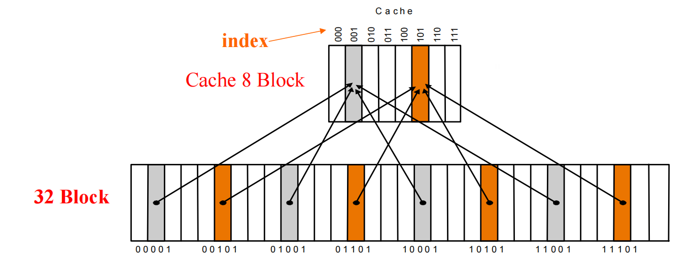
4.2 块识别：标签 (Tag) 与有效位 (Valid Bit)
仅仅通过索引定位到缓存中的一个位置是不够的。因为多个不同的主存块（例如块1、块9、块17，如果缓存有8块）都可能映射到同一个缓存索引（索引1）。我们必须能够区分，当前这个位置上存的到底是哪一个。
-
解决方案：标签 (Tag)
- 我们在缓存的每一行，除了存储数据块本身，还需要额外存储一个标签。
- 这个标签存储了该数据块原始的主存块地址的高位部分。
- 当CPU访问一个地址时：
- 使用地址的索引位，定位到缓存中的某一行。
- 并行地，将地址的标签位与该行存储的标签进行比较。
- 如果两者相等，并且...
-
引入有效位 (Valid Bit)
- 还有一个问题：缓存刚加电时，里面是无效的垃圾数据。或者某个位置可能从未被使用过。
- 我们为每一行增加一个有效位。当一个有效的数据块被加载进来时，该位置为
1；初始状态或被替换后，置为0。 - 最终的命中条件：当索引匹配，并且标签匹配，并且有效位为
1时，才算是一次真正的命中。
4.3 地址的划分
对于一个直接映射缓存，CPU发出的物理地址被划分为三个部分： 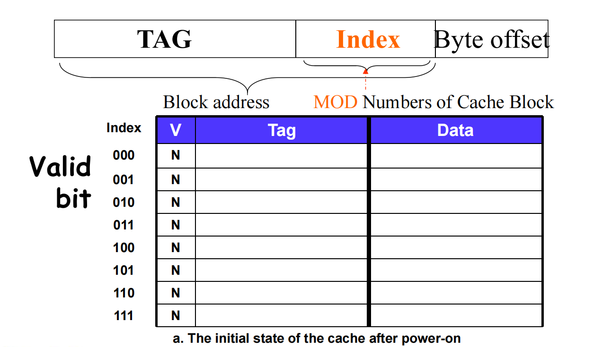
- 标签 (Tag)：地址的高位，用于与缓存行中的标签进行比较。
- 索引 (Index)：地址的中间位，用于选择缓存中的哪一行。
- 块内偏移 (Byte Offset)：地址的低位，用于在一个块中选择所需的字节。 (如果块大小大于一个字节)
4.4 一个完整的直接映射缓存访问示例
假设我们有一个8块、每块1个字的直接映射缓存。访存序列为：10110, 11010, 10110, ... (二进制地址) 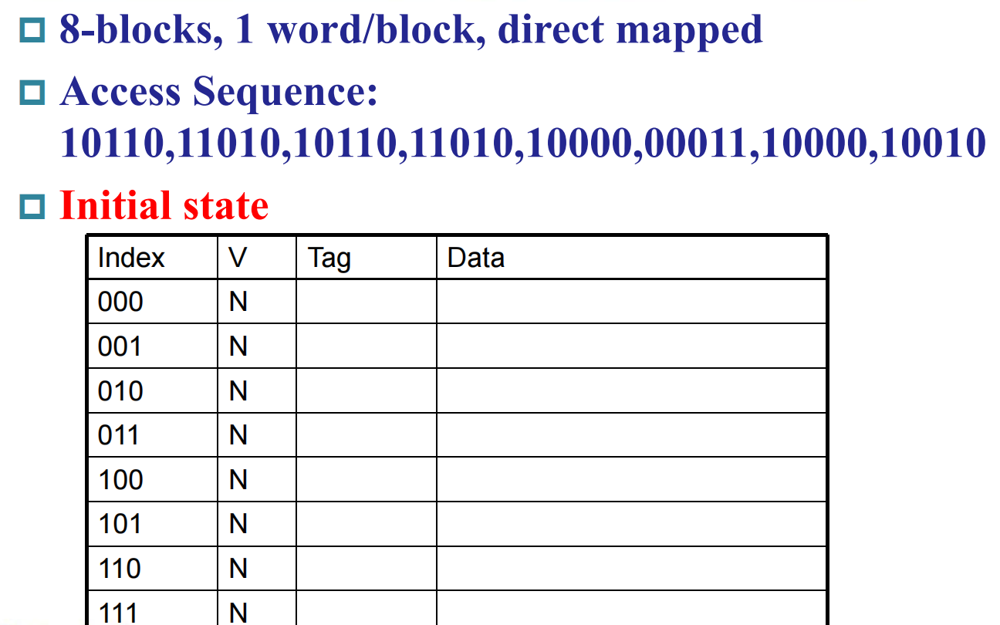
-
访问 10110:
- 地址分解：Tag=
10, Index=110。 - 检查索引
110的缓存行。有效位为N(无效)。Miss! - 从主存地址
10110处取出数据，存入索引110的数据区。 - 将Tag=
10写入该行的标签区。 - 将有效位置为
Y。 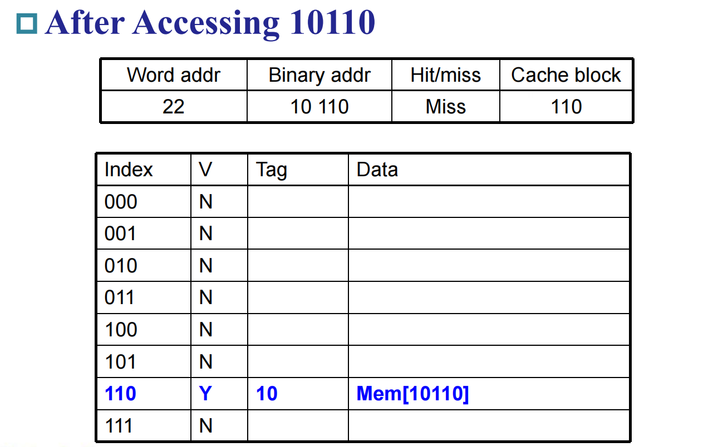
- 地址分解：Tag=
-
访问 11010:
- 地址分解：Tag=
11, Index=010。 - 检查索引
010的缓存行。有效位为N。Miss! - 加载数据，更新Tag=
11，有效位置Y。 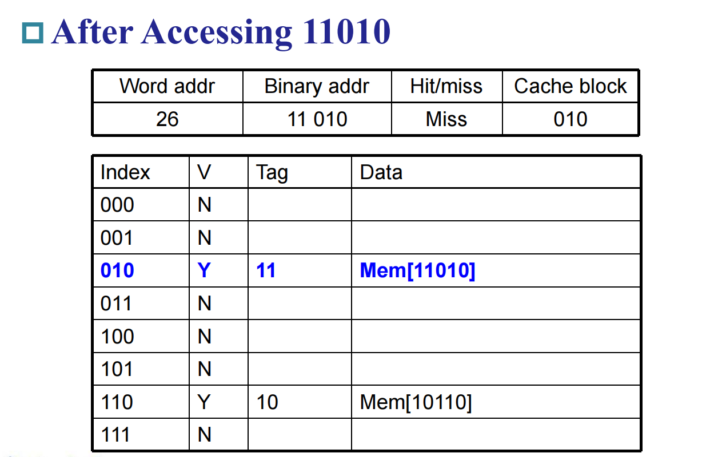
- 地址分解：Tag=
-
访问 10110 (第二次):
- 地址分解：Tag=
10, Index=110。 - 检查索引
110的缓存行。有效位为Y。 - 比较地址的Tag(
10)与该行存储的Tag(10)。相等！ - Hit! 直接从缓存中返回数据。 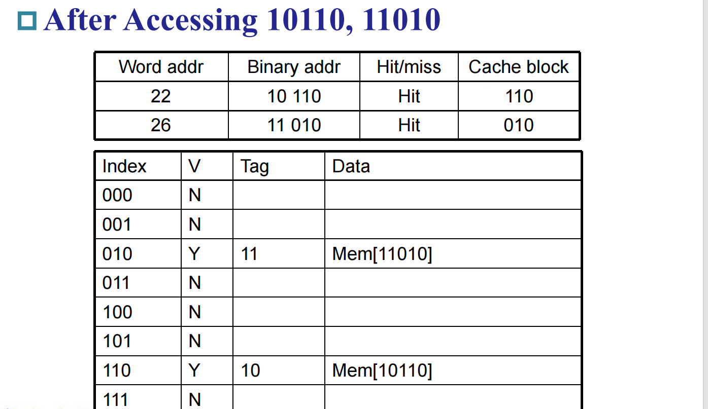 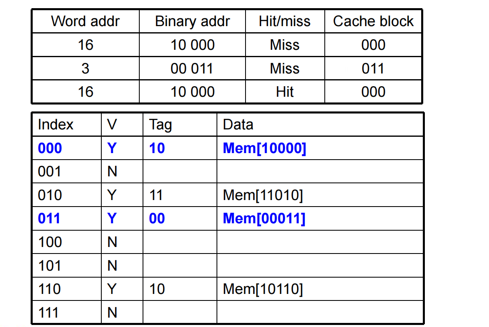
- 地址分解：Tag=
-
访问 10010 (冲突示例):
- 地址分解：Tag=
10, Index=010。 - 检查索引
010的缓存行。有效位为Y，Tag=11。 - 比较地址的Tag(
10)与存储的Tag(11)。不相等！ - Miss! 这种情况我们称之为冲突缺失 (Conflict Miss)。虽然缓存还有空位，但因为
11010和10010不幸地映射到了同一个索引，发生了“争地盘”的现象。 - 旧的数据（来自
11010）被替换掉。新的数据（来自10010）和新的Tag(10)被写入该行。 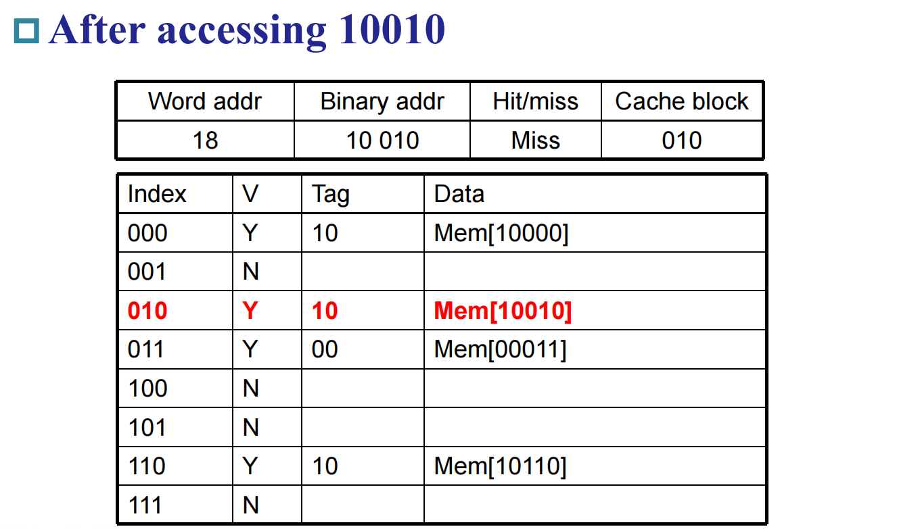
- 地址分解：Tag=
小结：直接映射缓存的设计非常简单，硬件实现速度快（只需要一次比较）。但它的缺点也很明显——冲突缺失率可能较高，即使在缓存远未满的情况下，频繁访问映射到同一索引的地址也会导致缓存的剧烈抖动（Thrashing）。